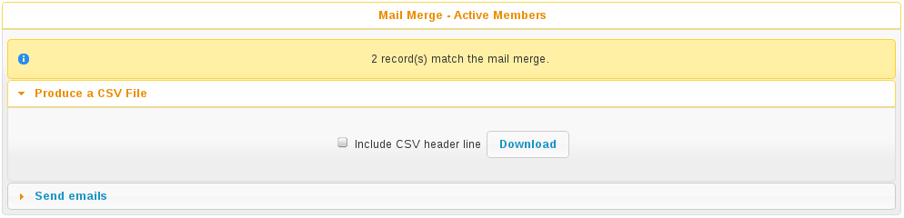
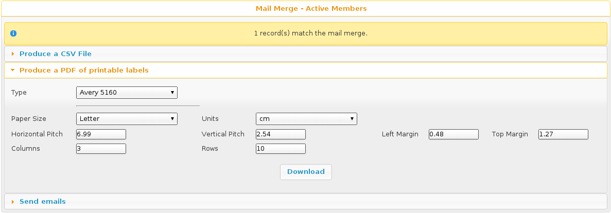
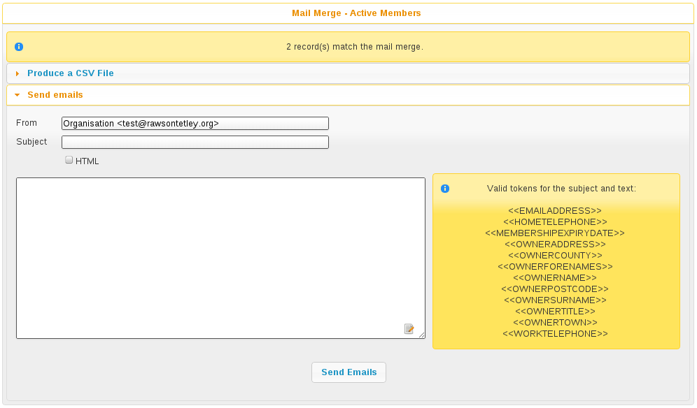

17 Mail Merge Sources
You can create mail merge data sources quickly and easily for integration directly into word processors and spreadsheet applications. From these applications you can then print off bulk letters or save individual document files. Mail merge sources generate CSV files to perform this integration. They can also generate PDF files for sheets of printable labels and send bulk emails.
17.1 Creating a Mail Merge Source
To create a mail merge source, navigate to the Mail top level menu.
Initially, ASM does not come preloaded with any, however you can install mail merge sources from Settings->Reports->Browse sheltermanager.com (they appear in the list with the type “Mail Merge”).

When executing a mail merge, you will be prompted to create a CSV file, print some labels, or send bulk emails. You will want to create a CSV file if you intend to use a wordprocessor to create printed letters.
The files are always named <source>.csv (CSV is a text-based file of comma separated values). The mail merge tool will prompt you for a location to save the file to.
17.2 Printing Labels
ASM can generate sheets of labels for your printer. It has a list of some popular label manufacturers and sizes, or you can enter the paper size and measurements from the back of the box of labels that you have. Hitting Download will send a PDF to your computer with all the addresses laid out for the labels and ready to print. Most modern web browsers can render and print PDF files directly.

17.3 Integrating With OpenOffice
These instructions apply to versions 1.x and upwards of OpenOffice.
To integrate your CSV merge source with OpenOffice, you will need to register it as a data source. Open a new, empty document in OpenOffice and click on the Tools menu. Now click on “Data Sources” to bring up the list of known data sources.
Enter the name first - you may call it anything you like, however for ease, use the name of the source in Animal Shelter Manager. For the type, select “Spreadsheet” from the drop down box. Click the browse button below to pop up an open dialog. You should then find the csv file you downloaded and select it.
Now, click on the tables tab. You will be prompted with the OpenOffice text convert screen. OpenOffice is intelligent enough to understand csv files and you can safely click the Ok button in the top right corner.
You will be returned to the data source manager screen. Simply click Ok now as you have successfully set up your mail data source.
17.3.1 Mail Merge Documents with OpenOffice
Now that your source is set up, you can create as many different documents as you like within OpenOffice to utilise them.
Create a new document, or open an existing one you would like to adapt. Pull down the “Insert” menu and select “Fields”, followed by “Other”.
Select the “Database” tab and highlight “Form Letter Field” on the left. You should now see all your data sources on the right in tree form. Expand the one you would like to use, and simply double click on fields to embed the placeholders in your document (these placeholders will be replaced with real data when you run the merge).
TIP: While this screen is open, double-click ALL the fields you intend to use and then move them around in your document later. This is much easier than coming back to this screen repeatedly for each field.
17.3.2 Running the Merge with OpenOffice
Once you have a document that you are happy with, make sure it is saved. To run the merge, bring up the data sources window by pressing F4 on the keyboard. Your datasources will be listed down the left hand side. Expand the one you want to use (you may be prompted for the text import again - simply click Ok). Expand the Tables section and highlight “Sheet1”. Your data will be displayed on the right hand side.
To initiate a merge, click on the “Form Letter” button. It appears on the data toolbar second from the right and looks like three envelopes stuck together.
You may now choose how to merge. You can write emails (by selecting “Electronic” and selecting “Email” as the field). Generate printed documents by using the printer, or generate individual copies of this document for each entry by selecting “File”.
17.4 Merging With Microsoft Word
These instructions apply to versions 6.0, 95, 97, 2000 and XP of Microsoft Word.
To integrate your mail merge source with Microsoft Word, simply open Word with an empty new document. Pull down the Tools menu and select “Mail Merge”. Word allocates data sources per document (as opposed to OpenOffice, which allocates data sources applicable to all documents).
Word will now prompt you through a three-step process, where you must either open an existing document or turn the current document into a mail merge document (you may choose from Form Letters, Address Labels etc.)
Step two prompts you to get the data source - simply find the csv file you download and select it. Note that by default Word will not show the csv files in its dialog - make sure you drop
down the file type list and select “All Files (*.*)”
If you used an empty document, Word will prompt you to select mail merge fields to use. You can insert these placeholders into your document by dropping down the “Insert Merge Field” button that has appeared on the merge toolbar.
When you are happy, make sure you save your document. To run the merge, go back to Tools->Mail Merge and select “Merge” under step 3.
Word will generate a new document containing a new copy of your original document for each entry in the data for you to print and save.
The Word document you have created will always rely on your data source, so should you change it (generate a new one from Animal Shelter Manager), you can simply open the document again and rerun the merge.
17.5 Bulk Emailling

In addition, Animal Shelter Manager allows you to bulk email any mail merge source directly - all you need is access to a SMTP (Simple Mail Transport Protocol) email server. ALL ISPs grant you this facility. If you are using sheltermanager.com hosting, then your account will already be set to smtp.sheltermanager.com
All ASM needs to know is the return address you would like stamped on the outgoing emails and the IP address/hostname of the SMTP server to use (usually smtp.<your ISP name>.com). Set these in Settings-Options (under the Email tab). It can also support authentication and TLS if your provider requires it.
In the merge screen, you can expand the email panel to send emails. It contains ASM's own internal email client with a list of tokens available so you can customise the email for each individual user.